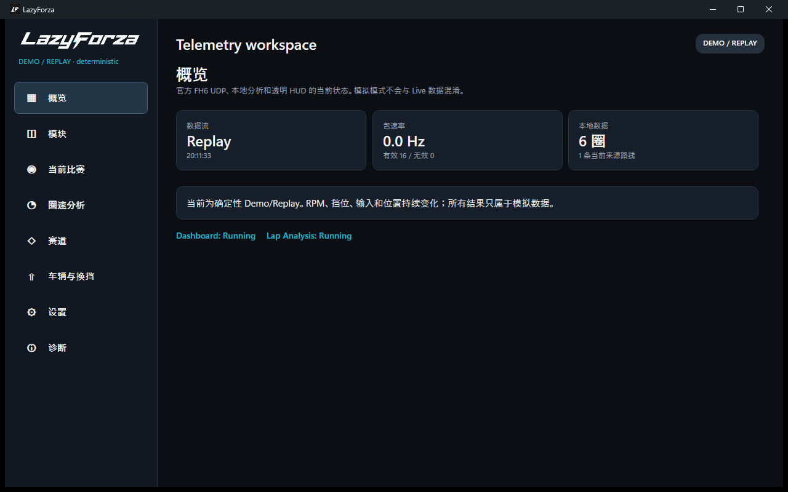

01
实时仪表盘
速度、挡位、踏板、轮胎与换挡提示保持在视线之内，布局和大小都能按习惯调整。
从实时仪表盘到圈速、走线和赛后复盘。只使用 FH6 官方 UDP Data Out， 所有个人数据都留在你的电脑里。
Windows 10 / 11 x64 · 解压即用 · 已包含 .NET 运行时

核心功能
速度、挡位、踏板、轮胎与换挡提示保持在视线之内，布局和大小都能按习惯调整。
对比同等级个人最快圈，定位刹车、入弯、出弯和油门恢复带来的真实差距。
用稳定性、分段趋势和组合最佳回看一场比赛，也可以导出简洁的 PNG 报告。
不读内存，不注入 DLL。
圈速、赛道与车辆学习留在本机。
源码与正式发行记录均可查阅。